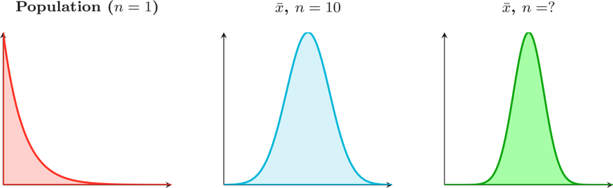
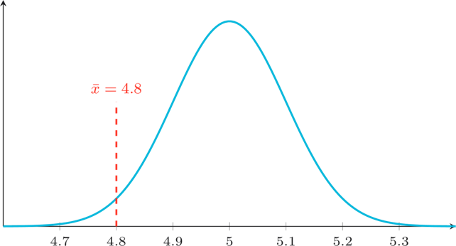
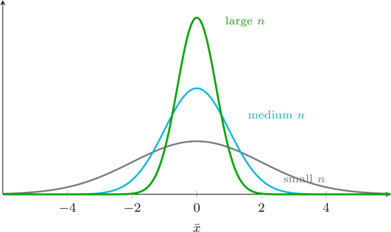
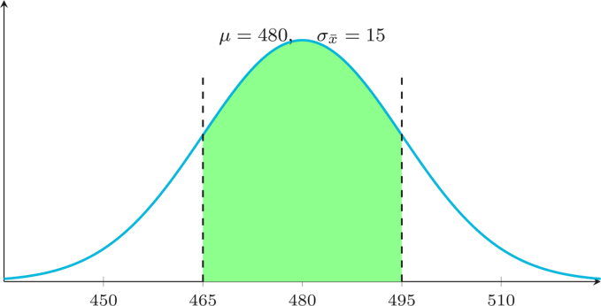

Sampling Station
Nine challenges on the sampling distribution of $\bar{x}$, the standard error $\sigma_{\bar{x}} = \sigma/\sqrt{n}$, and the Central Limit Theorem. Drawn from Weeks 6-7.
Foundations
10 points eachUnbiased Beacon
A population has mean $\mu = 75$. What is the mean of the sampling distribution of $\bar{x}$, that is $\mu_{\bar{x}}$?
Error Estimator
A population has standard deviation $\sigma = 30$. For a sample of size $n = 100$, calculate the standard error of the mean.
CLT Threshold
The three panels below show how the sampling distribution of $\bar{x}$ changes as sample size grows. The third panel is labelled $n = ?$. What is the minimum sample size at which the Central Limit Theorem typically lets us treat the sampling distribution of $\bar{x}$ as approximately normal?

Applied standard errors
20 points eachVendor Spread
The monthly income of Port Moresby market vendors has population mean $\mu = \text{K}1500$ and standard deviation $\sigma = \text{K}500$. A sample of $n = 100$ vendors is taken.
Find the standard error of the sample mean $\sigma_{\bar{x}}$, in Kina.
Data Drift
The diagram shows a sampling distribution. Read $\mu$ and $\sigma_{\bar{x}}$ from the diagram, and identify where $\bar{x}$ is marked. Then calculate the z-score.

Size Matters
The diagram illustrates how the spread of a sampling distribution changes with sample size. A population has $\sigma = 12$. For a sample of size $n = 36$, calculate the standard error.

Applying the CLT to probability
30 points eachPMV Patrol
Daily fare collections on a Lae PMV route are not normally distributed, with $\mu = \text{K}480$ and $\sigma = \text{K}90$. A researcher samples $n = 36$ days.
Find $\sigma_{\bar{x}}$, in Kina.
Fare Window
The diagram shows a sampling distribution. Read $\mu$ and $\sigma_{\bar{x}}$ from the diagram, then identify the lower and upper boundaries of the shaded region. Compute the z-scores and find the probability of the shaded region. Round to 4 decimal places.

Cocoa Check
A Kokopo cocoa plant fills dried-bean bags with weight $\mu = 62$ kg and $\sigma = 6$ kg. For a sample of $n = 64$ bags, find the standard error $\sigma_{\bar{x}}$, in kg.